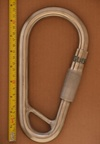
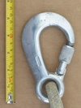
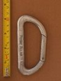
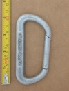

Gated-Hooks
Unlike carabiners, these hooks do not distribute load across the gate.
| Image | Summary | ||||
|---|---|---|---|---|---|
|  | GOIS 3/4" Snap Ring | HMS | n/a | n/a | massive slide-gated hook for industrial marine use |
|  | Kaya K-1 | hook | manual | nose stopped | aluminum gated-hook (not a snap-hook) with captive eye |
 | Pierre Allain (latchless) (curved nose) (a) | asymmetric D | n/a | n/a | non-load-bearing gate, early design |
|  | Pierre Allain (latchless) (curved nose) (b) | asymmetric D | n/a | n/a | non-load-bearing gate, early design |
 | Pierre Allain (latchless) (square nose) (large rivet) | asymmetric D | n/a | n/a | non-load-bearing gate, early design |
|  | Pierre Allain (latchless) (square nose) (small rivet) | asymmetric D | n/a | n/a | non-load-bearing gate, early design |
| Pierre Allain (latchless) (square nose) (tubular gate) | asymmetric D | n/a | n/a | tubular non-load-bearing gate | |
 | Skylotec FS 64 ALU | hook | full-auto | press | aluminum scaffold hook with a ANSI rated gate |